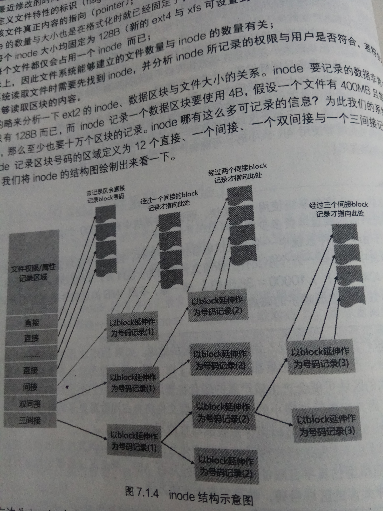
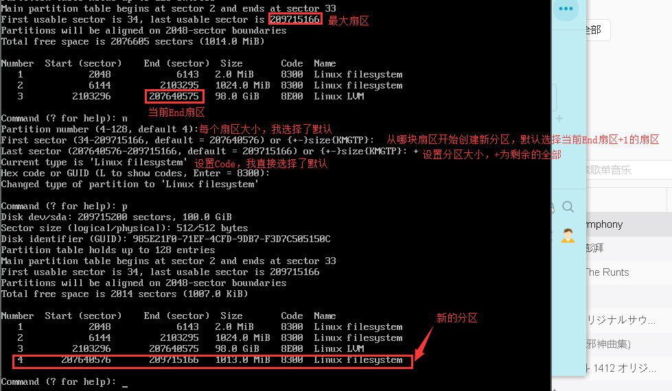
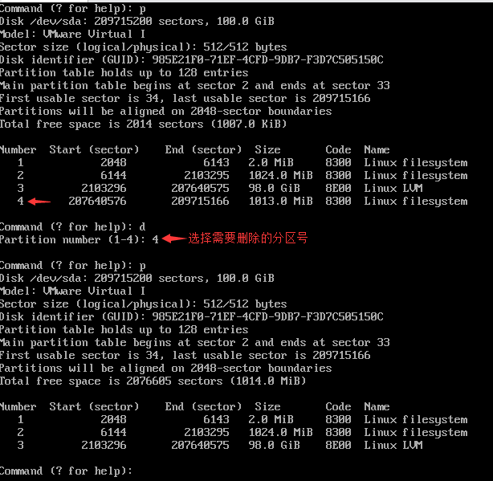
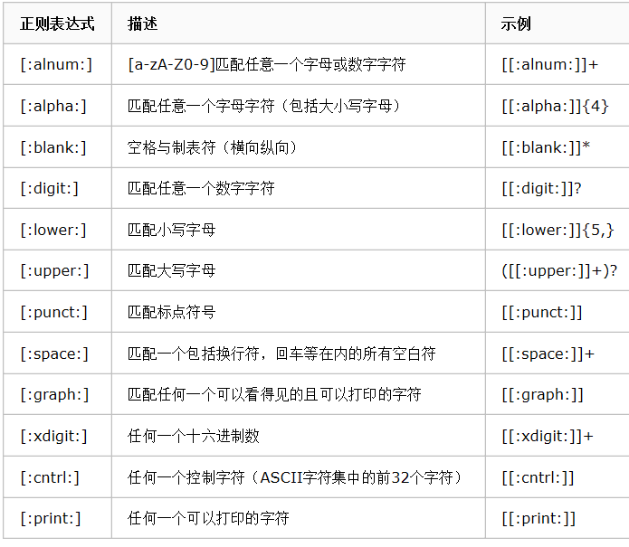
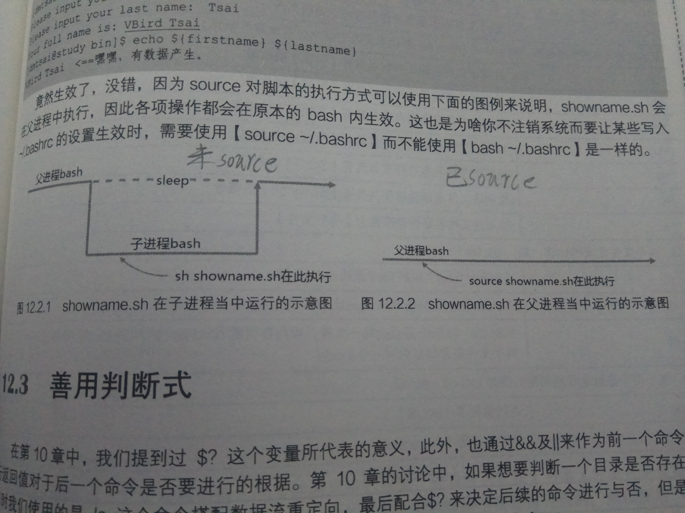
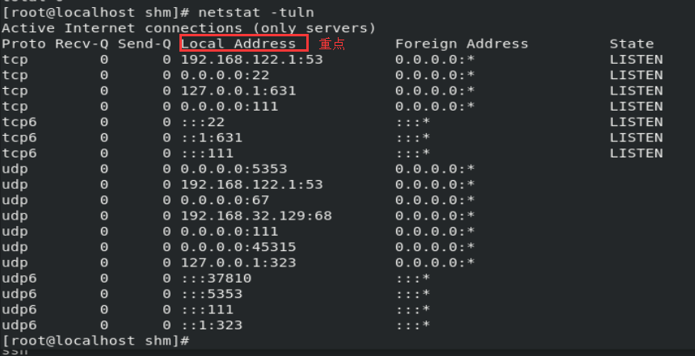
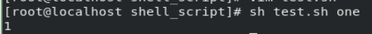

基于Cent8与书籍鸟哥的LINUX私房菜基础篇第四版
常用命令
tab按键名称补全
ctrl按键+c中断目前程序
ctrl按键+dexit
shift按键+page up上一页
shift按键+page down下一页
date时间
cal日历
clear清屏
su [用户名]切换用户，不输入用户名则切换到root
ls [-aid]查看当前目录所有文件的名称，a显示隐藏目录和文件i查看节点编号d区块存储大小
ll [-aid]查看当前目录所有文件的名称和权限
man [命令]获取该命令的使用说明
cp 文件 指定目录拷贝文件
mv 文件 指定目录移动文件
rm [-rf] 文件删除文件/目录r递归f强制删除
cd 目录.表示当前目录，..表示父目录
pwd查看当前目录
mkdir 名称创建目录
touch 名称创建文件
chmod 权限 文件修改文件的权限
file 文件查看文件类型
| r | w | x | 0 | 5 | 7 |
|---|---|---|---|---|---|
| 读 | 写 | 可执行 | 权限清空 | 读与可执行 | 全部权限 |
注意：数字最多只能有三个，分别表示：用户，组，其他用户
| 写法 | 功能 |
|---|---|
| u-rwx | 取消用户的读取，写入，执行 |
| g-rwx | 取消组的读取，写入，执行 |
| o-rwx | 取消其他用户的读取，写入，执行 |
| u+rwx | 添加用户的读取，写入，执行 |
| g+rwx | 添加组的读取，写入，执行 |
| o+rwx | 添加其他用户的读取，写入，执行 |
注意：rwx是可选择的，不一定要全写，写入你希望的权限就行了
yum list查看可以使用yum能下载的软件，通过yum install 软件名进行下载，install换成remove则是删除
find 查找目录 [-name] "查找名称"查找文件，find的使用条件所查找的路径必须具有读权限
grep [-iv] 需要查找的字符串 文件过滤，往指定文件查找字符串，i忽略大小写v查出不包含字符串的结果
管道符|将一个进程的输出作为另一个进程的输入
1 | // 显示所有在/my_test目录找到的有关键字main.cpp的文件，并输出详细信息 |
reboot重启
shutdown [-h] [时间]设置关机时间，时间处设置now则立刻关机
ping [-c<n>] 网页测试这个网页的ping，c测试测试次数
ifconfig查看和配置当前机器的网络参数信息
chattr [+-=] [ai] 文件或目录设置隐藏属性a只能增加数据，不能删和改i不能删改写只有root才能设置
+添加特设参数，-删除特殊参数，=直接设置特殊参数
vim编辑器
vim 文件名如果没有该文件就会创建一个空文本
按:输入使用命令
| 命令 | 功能 |
|---|---|
| wq | 保存 |
| q! | 不保存，并退出vim |
| i | 往文件输入内容 |
| esc按钮 | 取消当前命令，进入重新输入命令界面 |
环境变量
echo 环境变量名查看该环境变量里所有的路径
export 环境变量名=路径:$环境变量名设置临时环境变量`设置临时环境变量
注意：多个路径用:进行分隔
设置永久环境变量
打开
vim /etc/profile文件
在文件末尾处输入临时环境变量
保存
命令行输入source /etc/profile立即使用该配置文件
linux的ext2文件系统
这是linux最传统的磁盘文件
数据区块是用来存放文件数据的地方
ext2支持的区块
| 限制 | 1K区块 | 2K区块 | 4K区块 |
|---|---|---|---|
| 最大单一文件 | 16G | 256G | 2TB |
| 最大文件系统总容量 | 2TB | 8TB | 16TB |
如果需要修改区块大小与数量，必须格式化
每个区块只能存放一个文件的数据，如果一个文件的数量大于区块的大小，则这个文件会占用多个区块，
如果这个文件小于区块的大小，这个区块的剩余容量将不能被使用，造成了空间浪费文件系统最前面有个可以安装引导的启动扇区
inode(节点)表
记录文件属性以及文件实际数据存放的区块
文件的读写属性
文件拥有者与组
文件大小
文件建立与修改时间
最后一次读取时间
最近修改时间
文件的特性标识
文件真正内容的指向
每个文件只会占用一个inode，能建立的文件数量与节点数量有关
系统读取文件先找inode并分析所记录的权限与用户是否符合，符合则读取区块的内容
inode固定大小为128，256B，记录一个数据需要4B，假如超出inode大小则会出现间接记录区
间接分区就是再拿一块分区来当作记录区块号码的记录区，文件太大就会使用间接的分区来记录编号

节点 -> [间接区块] -> 区块
superblock超级区块
记录整个文件系统相关信息，没有超级区块就没有文件系统
区块与inode的总量
未使用的inode与区块数量
区块与inode的大小（区块为1k,2k,4k,inode为128b,256b）
文件系统的挂载时间，系统信息
有效位数值，被挂载为0，未挂载为1
VFS
用来管理所有的文件系统，了解即可
xfs文件系统
日志文件系统，文件系统恢复速度，创建速度快
主要规划为：
数据区有节点，数据区块，超级区块数据，区块可在512b-64k调整，节点可在256b-2m调整
文件系统活动登陆区文件的变化会被记录，直到变化完整写入到数据区，该记录才会结束。假如发生意外
（例如停电）导致文件系统损坏，系统会拿这个登录区进行校验，查看在系统出意外前，文件系统在做什么操作，
借此快速修复文件系统
实时运行区当文件要被建立时，会在这个区段里找数个extent区块，将文件存放到这个区块，等分配完后，
在写入到数据段和节点与区块中，这个extent的大小在格式化时先指定，4K-1G，extent的调整可能会影响到
物理硬盘的性能
链接
用于文件的共享
硬链接
通过系统的节点链接产生新文件名
硬链接只是在某个目录下新增一条文件名，链接到某个节点编号的关联记录
ln 源文件 目标文件建立硬链接
硬链接的限制为：不能跨文件系统于链接目录
符号链接（软链接）
类似于快捷键
软连接就是建立一个独立文件，这个文件会让数据的读取指向它链接的那个文件的文件名，由于只是利用文件
来做为指向的操作，当源文件被删除，软链接的文件就会打不开
ln -sf 源文件 目标文件添加了s选项就变成了软链接，f为强制执行
观察磁盘分区状态
lsblk [-] 设备列出所有磁盘列表
| 选项 | 功能 |
|---|---|
| -i | ASCII字符输出 |
| -p | 列出设置的完整名称 |
NAME设备名MAJ:MIN内核识别设备RM设备是否可卸载（比如移动硬盘之类的）SIZE容量RO是否为只读TYPE类型，disk为磁盘，partition为分区，rom只读存储器MOUNTPOINT挂载点
列出设备的UUID（全局唯一标识符）
该标识符是独一无二的，可以拿来挂载或使用这个设备的文件系统
blkid列出设备的UUID
列出分区类型与信息
parted 磁盘名称 print
Model磁盘模块名称Disk磁盘总容量Sector size磁盘的每个逻辑、物理扇区容量partition Table分区表格式
磁盘分区
fdisk
MBR用该分区
fdisk 磁盘名打开fdisk
gdisk
GPT用该分区
gdisk 磁盘名打开fdisk
d删除一个分区n增加一个分区p打印出分区表
| 名称 | 功能 |
|---|---|
| Number | 分区编号，/dev/xx1这样计算 |
| Start | 每个分区的开始扇区位置 |
| End | 每个分区的结束扇区位置，End-Start可获取分区总容量 |
| Size | 分区容量 |
| Code | 分区文件类型，Linux为8300，swap为8200，这只是一个提示 |
q不保存分区直接离开w保存操作后离开
新增分区
打开gisk输入p查看磁盘信息，以此信息为主来进行新分区的设置
输入n新增分区

最后按w保存
删除分区
输入d删除分区

最后按w保存
磁盘格式化
XFS文件系统mkfs.xfs
mkfs.xfs 分区编号对该分区进行格式化
为格式化添加cpu参数，可增加速度
grep 'processor' /proc/cpionfo查看cpu数量
mkfs.xfs -f -d agcount=cpu数量 分区编号为分区设置cpu参数d重要的相关参数f强制格式化
| -d可以设置的常用参数 |
|---|
| agcount=数值，设置存储群组，与cpu有关 |
| su=数值，有RAID时，分区区块stripe数值的意思，与sw配合使用 |
| sw=数值 |
| swidth=数值，就是su*sw的数值，以几个sector（512b大小）来设置 |
| -r指定realtime section相关设置 |
|---|
| extsize=数值，一般不设置，有RAID时最好设置与swidth的数值相同，最小4k最大1G |
XFS for RAID性能优化
文件 -> 分成许多小型的分区区块 -> 存储到磁盘阵列的所有硬盘里
RAID磁盘阵列，多块硬盘组成一大块硬盘，利用同步写入技术，可以加快写入速度，并且出现坏盘时整个
文件系统还可以继续运行，提高容错率与速度
磁盘阵列就是将文件细分为多个小型的分区区块stripe然后将众多的分区区块放到磁盘阵列里面的所有磁盘，所以
一个文件会同时写入到多个磁盘里，为了安全，会保留数个与磁盘阵列的规划有关的校验磁盘，以及一个或以上
的备用磁盘
数据宽度swidth = 分区区块stripe * 磁盘数量（需要扣除备份与备用盘）
extent大小 = 数据宽度swidth
sunit = 分区区块 / 512b * 1024b/k = sector扇区
swidth数据宽度 = 磁盘数量（需要扣除备份与备用盘） * sunit = sector扇区
ext4文件系统mkfs.ext4
mkfs.ext4 [-bL] 设备名称使用mkfs.ext4b设置区块大小1k，2k，4kL格式化为ext4文件系统
其他文件系统
mkfs 按两下tab查看其他文件系统
mkfs [-t] 文件系统格式 分区格式化分区为指定格式
文件系统校验
系统死机导致文件错乱时使用，可以检查和修复系统，修复时该文件系统不能挂载，必须要处于卸载的状态
xfs_repair处理XFS系统
xfs_repair [-fnd] 设备名校验/修复设备f是文件不是设备n检查d单人维护模式下，强制校验，针对
根目录进行检查与修复，不要随意用
fsck.ext4处理ext4文件系统
fsck.ext4 [-pf] [-b 超级区块] 设备名检查/修复设置p自动回复yf强制检查
文件系统挂载与卸载
单一文件系统不应该被重复挂载在不同的挂载点（目录）中
单一目录不应该重复挂载多个系统
作为挂载点的目录，需要为空目录
挂载
mount [-alo] [-t 文件系统 <UUID='' 挂载点>] a依照配置文件将/etc/fstab的所有未挂载的磁盘都挂载l显示目前挂载的信息o额外参数
-o的额外参数
| 写法 | 功能 |
|---|---|
| async | 文件系统非同步写入（默认） |
| sync | 文件系统同步写入 |
| atime | 修改文件读取时间 |
| noatime | 不修改文件读取时间 |
| ro | 挂载系统只读 |
| rw | 挂载系统可读写 |
| auto | 允许系统以mount -a自动挂载 |
| noauto | 不允许系统以mount -a自动挂载 |
| dev | 文件系统可建立设备文件 |
| nodev | 文件系统不可建立设备文件 |
| remount | 重新挂载 |
1 | #挂载文件系统 |
卸载
umount -[fn] 设备文件或挂载点卸载f强制卸载n不更新/etc/mtab情况下卸载
磁盘/文件系统参数自定义
通过修改文件的major与minor数值，实现文件代表设备
mknod 磁盘/文件 [-b<设备代码,次要设备代码>]
1 | #建立一个FIFO文件 |
修改XFS文件系统的UUID与Lable name
xfs_admin [-lu] [-L lbale] [-U uuid] 设备名 l列出lable nameu这个设备的uuidL设置新的lableU设置新的uuid
修改ext4的lable与uuid
tune2fs [-l] [-L lable] [-U uuid] l将超级区块内的数据读出来
生成uuid
uuidgen
设置启动挂载
系统挂载的限制：
根目录必须挂载，优先级最高
其他挂载点必须为已建立的目录
所有挂载点在同一时间内只能挂载一次
所有磁盘在同一时间内，只能被挂载一次
如果需要卸载，必须将工作目录移动到挂载点的子目录之外
直接到/etc/fstab进行设置，可以添加启动挂载，文件内容的6个字段非常重要
设备/UUID 挂载点 文件系统 文件系统参数 dump备份命令 fsck校验扇区
特殊设备loop挂载
比如镜像文件
1 | mount -o loop 源目录 挂载点目录 |
使用物理分区创建内存交换分区（swap）
创建分区 -> 格式化为swap格式 -> 启动挂载 -> 创建内存交换文件 -> 格式化为内存交换文件格式 -> 启动
使用gdisk或其他划分出给系统的内存交换分区
创建swap格式
mkswap 分区名观察与加载
freeswapon 分区名然后在free创建内存交换文件
//创建大文件
dd if=分区名 of=交换分区名 bs=1M count=需要创建的大小格式化为交换文件的文件格式
mkswap 目录 Setting up swapspace version 1, size = 数值 no lable, UUID=你的uuid启动
swapon 目录
swapon -s
关闭
swapoff 目录 分区
GNU的parted分区
parted 设备 [命令 [参数] ]
详细：man parted
压缩
tar -jcv 文件/目录 [-C 文件存放目录]添加压缩文件
命令行模式的shell
shell是所有Linux通用的
由于内核是受保护区域，需要通过shell与内核沟通
编码
locale -a查看支持的编码
打开/etc/locale.conf可以设置编码格式
限制
ulimit [选项] [配额]
命令别名
alias 别名=‘命令’设置命令别名
alias查看所有被取别名的命令
unalias 别名删除命令别名
历史命令
history [显示数量] [选项]
! [第几条命令]
!!执行上一条命令
!str执行以str开头的命令
命令记录文件存放在~/.bash_history
bash登陆欢迎界面
在/etc/issue
锁定与解锁
ctrl+s锁定
ctrl+q解锁
数据流重定向
标准输入流：0或<或<<
1 | #追加输入 |
标准输出流：1或>或>>
多个文件同时输出：&>或&>>
1 | #将ll输出的内容，输出到file里 |
标准错误输出流：2或2>或2>>
命令执行的判断根据
;
1 | #;为语句结束符，执行完ll /后执行ll /home |
&&与||或，判断符
1 | #两个为true则执行ll /usr |
1 | #其中一个ture就执行ll /usr |
选取命令
cut [选项]
grep [选项] 查找字符
排序
sort [选项] [file or stdin]排序
uniq [选项]排序完后，将重复的数据仅列出一个显示
wc [选项]查看文件有多少字，多少行，多少字符
双向重定向
同时将数据流分送到文件与屏幕（在屏幕输出一次，并写入到文件）
tee -a file a追加到file
1 | #将ll /追加到file，并在屏幕输出追加内容 |
字符串转换
tr删除或替换一段文字
tr [ds] SET1 ...将SET1替换成…
1 | #将ll /输出的内容，小写全部替换成大写 |
col将其他按键替换成空格
col [-xb]
1 | #将文件里的[tab]键，也就是^I的符号，替换成空格 |
join处理多个文件中，相同的数据
使用前需要排序
join [选项] file file2
paste将数据相同的行粘在一起，并以[tab]键隔开
paste [-d] file file2
expand自动将tab转成空格
expand [-t] file
划分split
将一个大文件，分成多个小文件
split [-bl] file PREFIX b划分成的文件大小，可加单位例如b,k,m等l以行数进行划分
参数代换
为命令提供标准输入
参数某个命令的参数
xargs [参数] command
正则表达式
条件正确则表达的式子

配合grep使用正则表达式
1 | # 查找所有a为开头的文件 |
sed将数据增删，替换，选取特点行等功能
seq [选项] [操作]
1 | #列出行号，并删除2-5行 |
文件格式化与相关处理
格式化打印printf
printf '打印格式' 实际内容
awk数据处理工具
awk '条件类型1{操作1} 条件类型2{操作2}' file
文件比对工具
用于比较两个不同版本的软件包，比较配置文件与原始文件的差异
diff [-bBi] 原始文件 目标文件用于同一文件/目录的新旧版本差异
cmp [-l] file1 file2用字节单位或二进制进行对比
shell脚本
自动化管理
跟踪与管理系统
入侵检测
连续命令单一化
数据处理
跨平台支持
编写格式
1 | #创建一个shell脚本 |
hellow word shell脚本
1 | #!/bin/bash #使用到的shell脚本 |
算术运算
sh hellow.sh执行脚本
echo $(( 1 + 1 ))进行整数算术运算
echo "1.1*2.2" | bc进行小数算术运算
子进程与父进程
未使用source写入父进程的话，自己写的写的脚本则会是子进程，直接调用echo是无法执行的
source xx.sh将自己写的脚本写进父进程

test测试功能
test [选项]
判断文件是否存在，如果存在则输出
1 | #!/bin/bash |
使用 [] 进行数据判断
让用户输入y/n的程序，输入其他则输出一个其他的提示信息
1 | #!/bin/bash |
shell的默认变量
$0执行的脚本文件名$#参数个数$@每个变量都是独立的，用””括起来$*每个变量用分隔符分隔，默认是空格

输出程序的文件名，参数数量，参数小于2则输出提示信息，输出全部参数，输出第一个和第二个参数
1 | #!/bin/bash |
参数号码偏移
1 | #!/bin/bash |

if than判断式
感觉和判断预处理宏差不多
有成立结果的都要加上then
1 | if [ 判断 ]; then |
提示输入hellow
1 | #!/bin/bash |
查询主机的网络端口
netstat -tuln获取主机启动的服务，并获取信息

Proto封包格式
Local Address本地IP:端口
Foreign Address远程IP:端口
State是否监听
常见的端口与相关网络服务
80: WWW
22: ssh
21： ftp
25： mail
111: RPC(远程过程调用)
631: CUPS(打印服务功能)
通过netstat检测网络服务
1 | #!/bin/bash |
求剩余时间的练习
declare用于声明shell变量
双小括号 (( ))
1.整数扩展。这种扩展计算是整数型的计算，不支持浮点型。((exp))结构扩展并计算一个算术表达式的值，
如果表达式的结果为0，那么返回的退出状态码为1，或者 是”假”，而一个非零值的表达式所返回的退出
状态码将为0，或者是”true”。若是逻辑判断，表达式exp为真则为1,假则为0。2.只要括号中的运算符、表达式符合C语言运算规则，都可用在$((exp))中，甚至是三目运算符。作不同进
位(如二进制、八进制、十六进制)运算时，输出结果全都自动转化成了十进制。如：echo $((16#5f)) 结果
为95 (16进位转十进制)3.单纯用 (( )) 也可重定义变量值，比如 a=5; ((a++)) 可将 $a 重定义为6
4.常用于算术运算比较，双括号中的变量可以不使用$符号前缀。括号内支持多个表达式用逗号分开。 只要
括号中的表达式符合C语言运算规则,比如可以直接使用for((i=0;i<5;i++)), 如果不使用双括号, 则
为for i in `seq 0 4`或者for i in {0..4}。再如可以直接使用if (($i<5)), 如果不使用双括
号, 则为if [ $i -lt 5
1 | #!/bin/bash |
case判断
1 | case $变量名 in |
例子
1 | #!/bin/bash |
函数
1 | function 函数名(){ |
例子
1 | #Program: |

循环(loop)
1 | while [表达式] |
当表达式成立则停止循环
1 | until [表达式] |
求1+到10的数
1 | #Program: |
for do done（固定循环）
1 | #第一次循环$var为c1，第二次循环$var为c2，以此类推 |
例子
1 | #Program: |
输出所有系统账户
1 | #Program: |
数值处理版本
1 | for (( 初始值；限制值; 赋值运算 )) |
输出1-10
1 | #Program: |
输出一个范围的数字或字母
$(seq 1 10)输出1-10的数字
{1..10}输出1-10的数字
{a..z}输出a-z的字母
搭配随机数与数组
1 | #Program: |
shell脚本的跟踪与调试
sh [-nvx] xx.sh n不执行脚本，仅查询语法的文件v执行脚本前，将脚本内容输出到屏幕x将使用到的脚本
输出到屏幕
账户管理
ID与账户保存在/etc/passwd
组保存在/etc/group
/etc/shadow存储用户的密码文件
id 账户名查看该账户的UID，GID，groups
UID：用户ID
GID：用户组ID
groups：组
| ID范围 | ID特性 |
|---|---|
| 0 | root |
| 1-999 | 系统账户，1-200 Linux自行建立账户 201-999 若用户有系统账户需求，可以用的账户UID |
| 1000-60000 | 可登陆用户 |
- 添加用户
useradd [-u 你的UID] [-g 你的组名] 用户名创建用户
passwd [选项] 用户为新用户添加密码
passwd 密码修改密码
- chage拥有详细的显示密码参数的功能
chage [选项] 用户名
- usermod微调用户参数
usermod [选项] 用户名
- 删除用户
userdel -r 用户名
- 查询UID/GID
id 用户名
- 创建用户组
groupadd [-g gid] 组名
- 修改组参数
groupmod 组名
- 删除组
groupdel 组名
- 组管理员
gpasswd 组名
主机的详细权限规划，ACL的使用
ACL访问控制列表，主要针对用户，组，默认属性
主要使用getfacl与setfacl这两命令
用户切换
su切换到root
su 用户名切换到指定用户
sudo 命令使用管理员权限执行该命令（需要通过管理员的审核，审核文件在/etc/sudoers）
PAM用户验证
用户信息传递
w目前在该设备登陆的用户
lastlog最近登陆用户的时间
用户对谈
write对话信息发送
mesg不接收任何人的信息
wall广播
邮箱
mail
进程管理
程序：通常为二进制程序，以物理文件的形式存储
进程：程序被触发，执行者的权限与属性会被加载在内存中，操作系统会给予该内存一个PID

父进程与子进程，一般子进程的PPID和父进程的PID是一样的


ctrl+z当目前进程丢进后台【暂停】
kill(fg) % n删除（返回）指定暂停的程序,通常配合ps和pstree
jobs查看后排任务状态
bg % 1程序在后台运行
nohup及时设备注销后，程序依然运行
ps查看静态进程
top查看动态进程
pstree子进程砍不掉时，获取其父进程
| 代号 | 功能 |
|---|---|
| 1 | 启动被终止的程序 |
| 9 | 强制终止程序，未完成部分以一个文件的形式保留下来 |
| 15 | 正常方式终止程序 |
killall删除服务
nice调整程序优先级
renice修改已存在程序优先级
free查看内存使用情况
uname查看系统与内核信息
uptime系统启动时间与任务负载
netstat追踪网络或socket文件，被用于网络监控方面
dmesg内核产生的信息
vmstat系统资源变化
fuser找出在使用该文件的进程
losf列出被进程使用的文件名
pidof找出正在执行程序的PID
SELinux
安全强化版Linux
安全上下文
身份识别（用户是否受限制）
类型（判断主程序是否可以读取程序）
角色（数据属于进程，文件资源代表用户）

getsebool查看系统规则是否开启
setsebool [-P] 规则名 [0|1]修改规则
chcon手动修改文件的SELinux类型
restorecon恢复文件的SELinux
semanage默认目录的安全上下文查询与修改
vsftpd默认FTP服务器软件
终端输入vsftpd下载软件
给用户下载的FTP文件会放在/var/fpt/pub目录
curl简单的终端浏览器
daemon与服务
daemon与服务可以视为相同的东西
查看进程时，{xxx}d通常是deamon的进程
所有的服务启动脚本放置在/etc/init.d目录
| 命令 | 功能 |
|---|---|
| start | 启动 |
| stop | 关闭 |
| restart | 重启 |
| status | 查看状态 |
/etc/init.d/deamon 命令
服务启动分类
独立启动，服务常驻在内存，反应快
超级守护进程，由特殊的xinetd或inetd提供socket对应或端口对应的管理
通过systemctl管理服务
systemctl [command] [unit]
查找指定进程与强制结束指定进程
1 | #查找指定进程 |
-s 9 制定了传递给进程的信号是９，即强制、尽快终止进程|
-|-
命令行浏览网页
- curl
直接读取网站HTML代码
1
curl https://www.baidu.com/
关闭防火墙
1 | #重启后防火墙依然生效 |